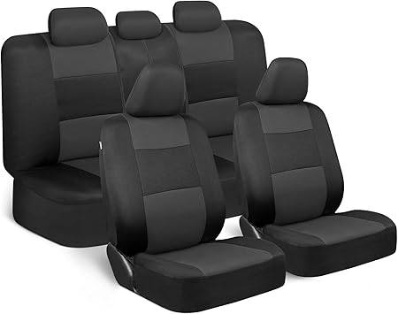

The Toyota Stout is coming. Here are the accessories worth watching — so you're ready to order the moment your truck arrives.
The Toyota Stout is expected to arrive as a compact truck with strong appeal for both daily drivers and weekend adventurers. Like the Tacoma, it will attract a deep aftermarket ecosystem. Getting your accessory list ready before launch means you can protect your investment from day one — before the first scratch, spill, or trail run.
Custom-fit seat covers are the single best investment for a new truck. They protect against mud, water, UV damage, and daily wear. For the Stout, look for waterproof options with a precise fit for your cab configuration. Brands like Bartact make seat covers specifically for Toyota trucks and are worth watching for Stout fitments.

Shop Toyota Stout Seat Covers →All-weather floor mats are a must for any truck. They trap mud, water, and debris before it soaks into the carpet. Heavy-duty rubber or thermoplastic options are the best choice for off-road use. Expect WeatherTech and Husky Liners to have Stout fitments available at or near launch.
Shop Toyota Stout Floor Mats →A bed liner, bed mat, or tonneau cover should be on every Stout owner's list. These protect the bed from scratches, dents, and weather. Spray-in liners offer the best protection; drop-in liners are more affordable and removable. Tonneau covers improve fuel economy and keep cargo secure.
Shop Toyota Stout Bed Accessories →Center console organizers, dash covers, and storage solutions keep the interior functional and protected. These are low-cost, high-impact upgrades that make daily driving more comfortable.
Shop Toyota Stout Interior Accessories →Running boards, fender flares, and mud flaps are popular exterior upgrades for truck owners. They add style while protecting the paint from rocks and debris. Expect a full range of exterior accessories from the Toyota aftermarket within the first year of Stout production.
Shop Toyota Stout Exterior Upgrades →